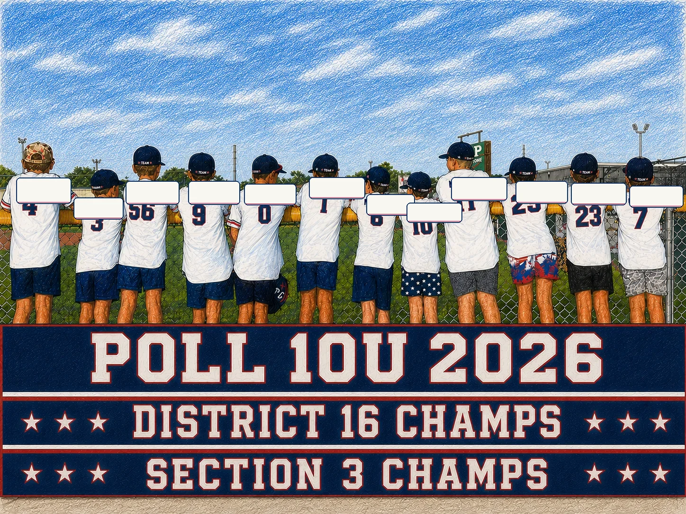

The 2026 Post Oak Little League 10U All Stars captured the Texas East State Championship through months of preparation, teamwork, and unforgettable moments.
This website preserves that journey.
Texas East State ChampionsFirst Post Oak 10U Texas East title since 2019150+ teams began the journeyOne champion remained
Twelve boys. Endless practices. District Champions. Section Champions. Texas East State Champions.
Every championship begins long before the final game. This one was built one practice, one inning, and one pitch at a time.
Our Path
Three chapters. One finish.
The journey began with a loss. Post Oak answered by winning twelve straight games—six through District 16, three through Section 3, and three at State—to finish as the 2026 Texas East State Champions.
After dropping the opening game, Post Oak faced elimination—and never lost again. Six straight victories completed the comeback, capped by a winner-take-all shutout to claim the District 16 Championship.
Three games. Three wins. One run allowed. Post Oak completed its twelve-game winning streak with a 4–0 shutout over Lamar to capture the Texas East State Championship.
We Prepared.
After our early setback, we called in a little help from our friends.
Championships are never won alone. Friends of the program shared messages of encouragement, confidence, and belief that helped inspire the team throughout its championship run.
Jon Gruden
Eric Shellhouse / Bat Boys
Bryce Harper
We Got Hyped.
The soundtrack of a run.
Two videos captured the energy, emotion, and belief that surrounded the team as they chased a Texas East State Championship.
State Championship Trailer
Hype Video
Catch The Fever
The Final Chapter
Post Oak 4. Lamar 0.
Twelve straight wins led to one final game. Post Oak completed a perfect 3–0 run through the Texas East State Tournament, allowing just one run in three games and finishing with a 4–0 championship shutout over Lamar.
Championship Recap
Post Oak 4 • Lamar 0
The final chapter ended with a shutout, a dogpile, and a Texas East State Championship.
Post Oak Offense
Pressure all night.
Four runs on six hits. A three-run home run broke the game open and gave Post Oak the lead. Timely hitting and aggressive baserunning created pressure throughout the game.
Post Oak Pitching
Combined shutout.
Eight strikeouts. Three walks. Lamar was held scoreless over six innings.
LOB
Official box score not available in approved materials
Post Oak Defense
Every out mattered.
Key double plays and routine plays preserved the shutout. The defense recorded the final out to secure the Texas East State Championship.
Tournament Snapshot
3–0 at State.
State Tournament Record
3–0
Runs Scored
15
Runs Allowed
1
Championship Game
Post Oak 4 • Lamar 0
The Team
One Team. One Mission.
Twelve boys. One unforgettable summer. Three tournaments. One State Title.
Twelve boys committed to one another and answered every challenge together. With their coaches, families, and league behind them, they turned an opening loss into twelve consecutive victories—and a summer that became part of Post Oak Little League history.

The Numbers
The story in bold type.
12Players
13Tournament Games
1Loss
12Straight Wins
3Championships
3–0State Tournament Record
1Run Allowed at State
150+Teams Began the Journey
1State Champion
Thank You
A championship built by a community.
This title belongs to twelve players, the parents who made every practice possible, the coaches who believed in them, the volunteers who served the game, and the Post Oak community that supported the team every step of the way.
With special appreciation to our tournament hosts—Missouri City Little League, North Houston American Little League, and Pearland Little League—and to every opponent who helped make this championship journey unforgettable.
{kind=link}
{kind=link}
{kind=link}